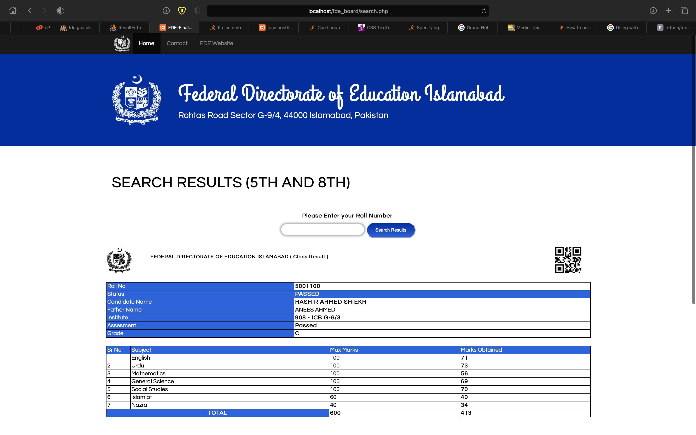

<div id="de_modal-content" class="container">
    <div class="row g-5">
        <div class="col-lg-8">
            <div class="row g-4">
                <div class="col-lg-12 item">
                    
                </div>
               
            </div>
        </div>

        <div class="col-lg-4 de_project-info">
            <h3>Results Website</h3>
            <p>Results Portal Website uses RestFul API from Examination System (FDE) to display students online result. Gazette as well as Reporting website for Institutions to see the progress of overall result.</p>

            <div class="de_project-details">
                <div class="d-field">
                    <i class="fa fa-user-o"></i>Client: <span>Government of Pakistan (FDE)</span>
                </div>
                <div class="d-field">
                    <i class="fa fa-file-text-o"></i>Type: <span>Website</span>
                </div>
                <div class="d-field">
                    <i class="fa fa-calendar-o"></i>Year: <span>2023</span>
                </div>
                <div class="d-field">
                    <i class="fa fa-external-link"></i>Preview: <span><a href="https://results.fde.gov.pk">results.fde.gov.pk</a></span>
                </div>
            </div>
            <div class="spacer-30"></div>
         
        </div>
    </div>
</div>